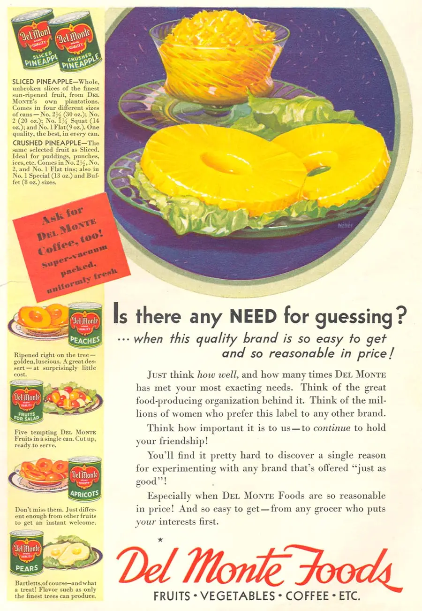

대표 로고대표 브랜드 마크
대표 로고대표 브랜드 마크델몬트 푸즈 Del Monte Foods
델몬트 푸즈(Del Monte Foods)는 1886년 설립된 미국의 식품 기업이다. 샌프란시스코에 본사를 두었으며 통조림 식품과 애완동물 사료 사업을 해 왔다.
최종 업데이트
델몬트 푸즈는 어떤 브랜드인가
델몬트 푸즈(Del Monte Foods)는 미국 캘리포니아에 본사를 둔 식품 기업이다. Del Monte, S&W, Contadina, College Inn 같은 식품 브랜드를 만들어 왔고 애완동물 사료도 판매한다.
델몬트라는 이름은 1880년대 캘리포니아 오클랜드의 한 식품 유통업체가 고급 커피 블렌드에 쓰면서 등장했다. 1972년에는 모든 식품에 자발적으로 영양성분 표시를 채택한 미국의 주요 식품 가공업체가 되었다.
한국과는 1982년 12월 롯데칠성음료와 주스 생산 및 판매 기술 제휴에 대한 독점 계약을 맺은 인연이 있다. 2025년 7월 2일에는 미국 내 통조림 사업을 담당하는 델몬트 푸드가 파산보호를 신청했다.
델몬트 푸즈는 어떻게 시작되고 성장했나
델몬트라는 이름은 1880년대 캘리포니아 오클랜드의 한 식품 유통업체가 Hotel Del Monte를 위해 준비한 고급 커피 블렌드에 쓰면서 시작되었다. 1892년까지 이 회사는 사업을 확장하며 새로운 복숭아 통조림 라인의 브랜드 이름으로 델몬트를 선택했다.
1898년 18개의 서부 해안 통조림 회사가 합병해 캘리포니아 과일 통조림 협회(CFCA)가 설립되었고, 1916년 Calpak(California Packing Corporation)으로 통합되어 델몬트와 선키스트 브랜드로 제품을 판매했다. 1967년 6월 회사는 주요 브랜드의 이름을 채택해 Del Monte Corporation이 되었다.
델몬트 푸즈의 브랜드 아이덴티티는 무엇인가
델몬트 브랜드를 앞세운 미국 통조림 식품 기업으로, 1982년 롯데칠성음료와의 기술 제휴로 한국과도 연결된다.
델몬트 푸즈의 대표 제품과 서비스는 무엇인가
Del Monte, S&W, Contadina, College Inn, 9Lives 등의 브랜드를 만들어 냈다. 2000년에는 감귤류와 열대 과일 브랜드 SunFresh의 전 세계 판권을 획득했고, 이듬해 3월에는 가공 과일, 채소, 토마토, 특수 소스 제품의 S&W 브랜드 전 세계 판권을 획득했다.
2006년에는 Meow Mix와 Kraft Foods의 Milk-Bone을 인수해 두 번째로 큰 애완동물 식품 회사가 되었다. 같은 해 영유아 급식 사업과 소매 자체 상표 수프 및 그레이비 사업은 매각했다.
2015년에는 통조림 야채 브랜드 소유주인 Sager Creek을 인수했다.
델몬트 푸즈는 지금 어떤 상태인가
2011년 3월 Kohlberg Kravis Roberts가 참여한 펀드가 이끄는 투자자 그룹에 인수되어 뉴욕 증권 거래소에서 상장 폐지되었다. 2014년 2월 필리핀 기업 Del Monte Pacific Limited가 소비자 식품 사업부를 인수했고, 나머지 애완동물 사료 사업은 Big Heart Pet Brands로 이름이 바뀌었다.
2015년 본사를 콘트라 코스타 센터로 옮겼으며, 2025년 7월 2일 미국 내 통조림을 담당하는 델몬트 푸드가 파산보호를 신청했다. 한국 제휴 담당은 롯데칠성음료로, 이 신청과 무관하다.
델몬트 푸즈 로고는 어떻게 변해왔나
대표 로고대표 브랜드 마크사진으로 보는 델몬트 푸즈의 역사

자주 묻는 질문
델몬트 푸즈는 어느 나라 브랜드인가요?
델몬트 푸즈는 미국의 식음료 브랜드입니다.
델몬트 푸즈는 언제 설립되었나요?
델몬트 푸즈는 1886년 설립되었습니다.
델몬트 푸즈의 브랜드 아이덴티티는 무엇인가요?
델몬트 브랜드를 앞세운 미국 통조림 식품 기업으로, 1982년 롯데칠성음료와의 기술 제휴로 한국과도 연결된다.
델몬트 푸즈의 대표 제품은 무엇인가요?
Del Monte, S&W, Contadina, College Inn, 9Lives 등의 브랜드를 만들어 냈다.
델몬트 푸즈는 어느 기업이 소유하고 있나요?
2011년 3월 Kohlberg Kravis Roberts가 참여한 펀드가 이끄는 투자자 그룹에 인수되어 뉴욕 증권 거래소에서 상장 폐지되었다.
델몬트 푸즈의 본사는 어디에 있나요?
델몬트 푸즈의 본사는 샌프란시스코에 있습니다(위키데이터 기준).
델몬트 푸즈의 공식 웹사이트는 어디인가요?
델몬트 푸즈의 공식 웹사이트는 http://www.delmonte.com/ 입니다.
출처와 검증
델몬트 푸즈 관련 참고: 공식 웹사이트 · 위키데이터 Q1183805 · 한국어 위키백과 · 영어 위키백과. 브랜드명은 한글과 원어를 함께 표기하되 데이터에 없는 표기는 만들지 않습니다. 기원 국가·설립연도는 검수된 정의문에서 확인된 값을 우선하고, 없을 때만 공식 웹사이트 URL이 일치하는 위키데이터 개체의 값을 씁니다. 웹 첫 보관은 인터넷 아카이브가 공식 사이트 첫 화면을 처음 보관한 날로, 사이트 개설일과 다를 수 있습니다. 위키데이터 값은 2026-11-06 기준입니다.